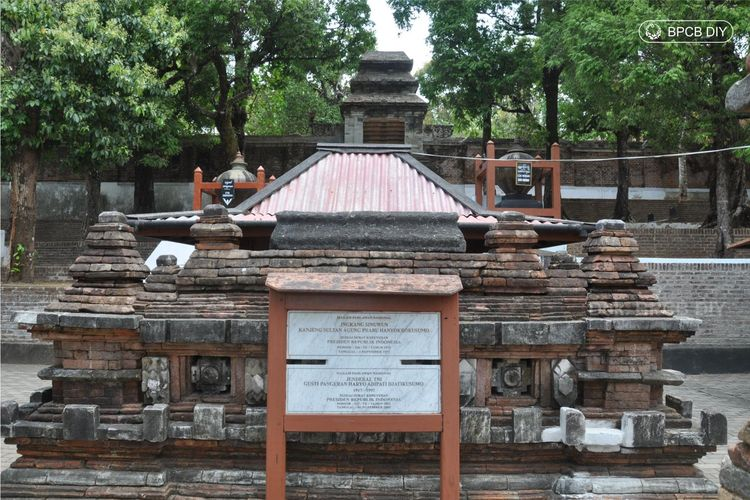

Pajimatan Imogiri

Kompleks Makam Raja-Raja Mataram di Imogiri, yang dikenal sebagai Pajimatan Imogiri, merupakan situs
bersejarah yang terletak di Dusun Pajimatan, Girirejo, Imogiri, Bantul, sekitar 17 kilometer selatan
Yogyakarta. Terletak di puncak Bukit Merak dengan ketinggian 85 meter di atas permukaan laut, kompleks
ini menawarkan pemandangan yang indah dan menjadi tempat peristirahatan terakhir bagi para raja dan
keturunan Kerajaan Mataram Islam hingga masa pembagian menjadi Kesultanan Yogyakarta dan Kasunanan
Surakarta.
Pembangunan kompleks makam ini diprakarsai oleh Sultan Agung pada tahun 1632 Masehi dan selesai pada
tahun 1645 Masehi. Menurut Babad Momana, Sultan Agung awalnya merencanakan pembangunan makam di
Giriloyo, namun karena keterbatasan lahan dan wafatnya Panembahan Juminah, paman Sultan Agung,
pembangunan dipindahkan ke Bukit Merak. Makam ini pertama kali digunakan pada tahun 1644 Masehi saat
Sultan Agung wafat.
Kompleks Pajimatan Imogiri dibagi menjadi delapan bagian yang disebut Astana atau Kedhaton,
masing-masing dibatasi oleh tembok dan pintu masuk berbentuk gapura. Pembagian ini mencerminkan struktur
sosial dan politik Kerajaan Mataram serta pembagian wilayah antara Yogyakarta dan Surakarta. Astana
Sultan Agungan dan Astana Paku Buwanan merupakan tempat peristirahatan raja-raja Mataram sebelum
pembagian kerajaan. Astana lainnya dibagi antara Surakarta di sayap barat dan Yogyakarta di sayap timur.
Astana Sultan Agungan mencakup makam Sultan Agung dan Susuhunan Amangkurat II, sementara Astana Paku
Buwanan mencakup makam Susuhunan Paku Buwana I, Amangkurat IV, dan Paku Buwana II. Astana Kasuwargan
Surakarta mencakup makam Paku Buwana III, IV, dan V; Astana Kaping Sangan mencakup makam Paku Buwana VI,
VII, VIII, dan IX; dan Astana Kaping Sedasan mencakup makam Paku Buwana X, XI, dan XII. Di sisi
Yogyakarta, Astana Suwargan mencakup makam Sultan Hamengku Buwana I dan III; Astana Besiyaran mencakup
makam Sultan Hamengku Buwana IV, V, dan VI; dan Astana Saptorenggo mencakup makam Sultan Hamengku Buwana
VII, VIII, dan IX.
Setiap Astana dibagi menjadi beberapa halaman untuk memisahkan area sakral dan non-sakral, mencerminkan
nilai-nilai spiritual dan budaya Jawa. Kompleks ini tidak hanya menjadi tempat peristirahatan terakhir
para raja, tetapi juga simbol kekuatan spiritual dan perlindungan bagi kerajaan. Nama "Pajimatan"
sendiri berasal dari kata "jimat," yang berarti benda sakral yang diyakini memiliki kekuatan pelindung.
Kompleks Makam Imogiri juga mencerminkan pembagian politik dan budaya antara Kesultanan Yogyakarta dan
Kasunanan Surakarta. Meskipun dibagi secara administratif, kedua pihak tetap menjaga dan merawat
kompleks ini bersama-sama, menunjukkan rasa hormat dan penghargaan terhadap warisan bersama.
Sebagai situs cagar budaya, Makam Raja-Raja Mataram di Imogiri menjadi destinasi ziarah dan wisata
sejarah yang penting. Pengunjung dapat mempelajari sejarah Kerajaan Mataram, memahami nilai-nilai budaya
Jawa, dan merasakan suasana spiritual yang kental. Kompleks ini juga menjadi tempat pelestarian tradisi
dan budaya, dengan abdi dalem dari kedua keraton bertugas menjaga dan merawat makam.
Dengan arsitektur yang khas, nilai sejarah yang tinggi, dan makna spiritual yang mendalam, Makam
Raja-Raja Mataram di Imogiri merupakan warisan budaya yang tak ternilai. Kompleks ini tidak hanya
mencerminkan kejayaan masa lalu, tetapi juga menjadi simbol persatuan dan identitas budaya Jawa yang
harus dijaga dan dilestarikan untuk generasi mendatang.